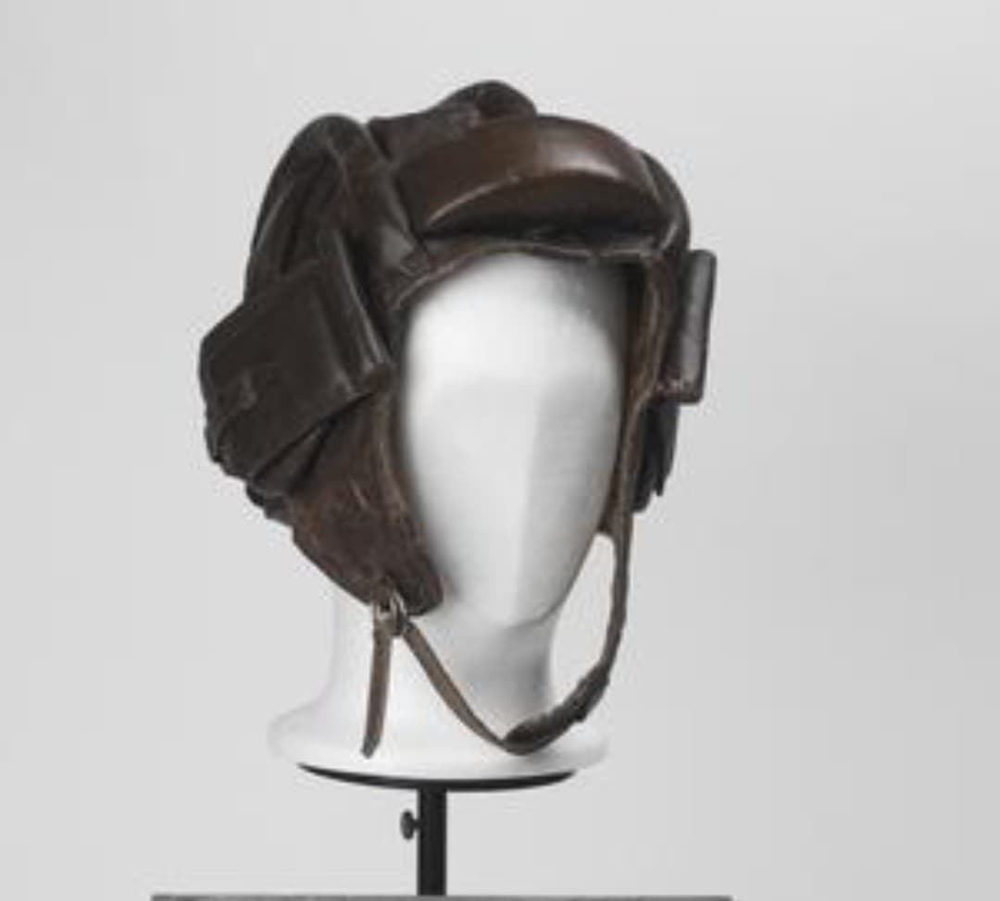
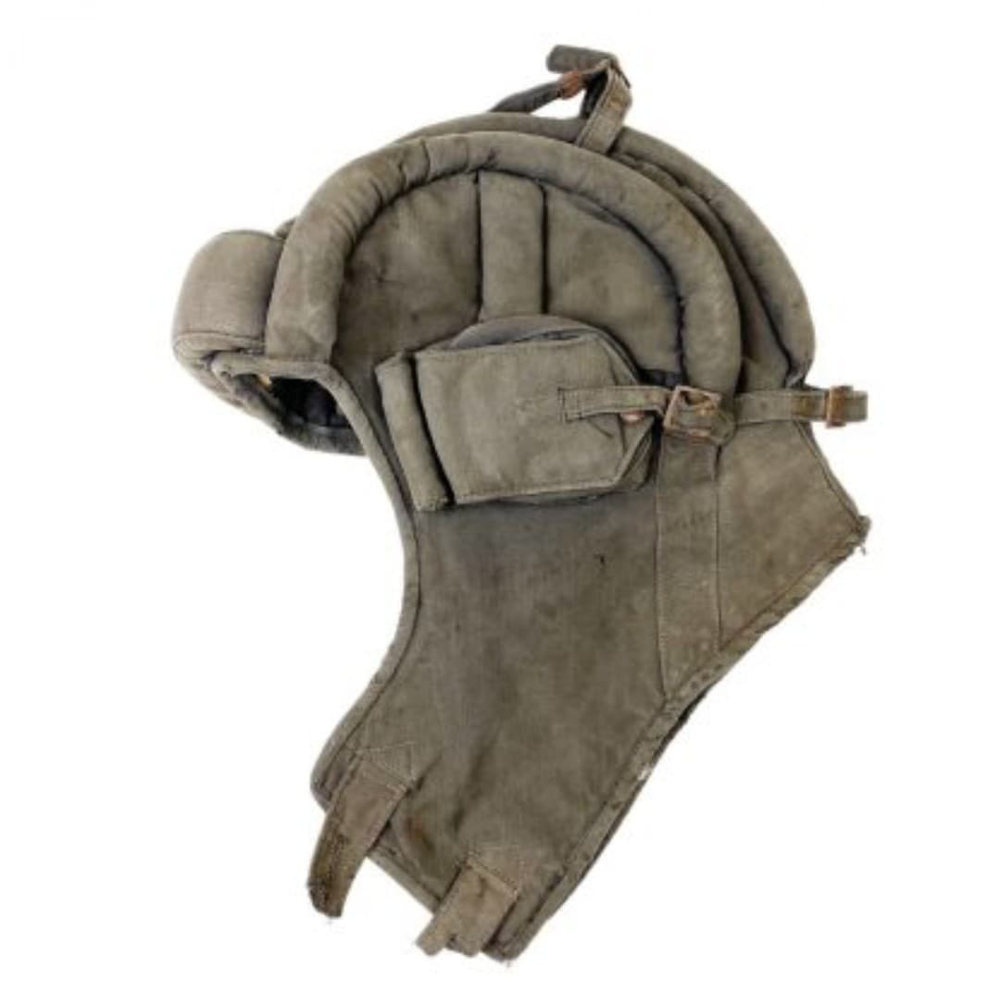

Le casque de tankiste soviétique, appelé Шлем танкиста, est un casque souple conçu pour protéger les équipages de chars des chocs internes dans l’habitacle métallique. Contrairement aux casques d’infanterie, il n’est pas destiné à arrêter les projectiles, mais à amortir les impacts contre les parois du char lors des manœuvres.
Il existe en deux grandes versions : une version en cuir épais, emblématique des premières années du conflit, et une version en tissu économique, produite massivement à partir de 1941.

Le casque se compose de plusieurs bourrelets rembourrés sur le dessus, d’un coussin frontal épais et de larges oreillettes pouvant accueillir des écouteurs radio dans les chars équipés. Sa conception souple permet d’éviter les blessures lors des secousses violentes, freinages brusques ou impacts indirects.
Les équipages de T‑34, KV‑1, IS‑2 et autres blindés soviétiques portent ce casque en permanence à l’intérieur du char, tandis que le casque d’infanterie n’est utilisé que lors des combats hors véhicule.

Le casque est porté durant :
Il devient un élément visuel emblématique des équipages soviétiques, souvent associé aux T‑34 traversant le front de l’Est.